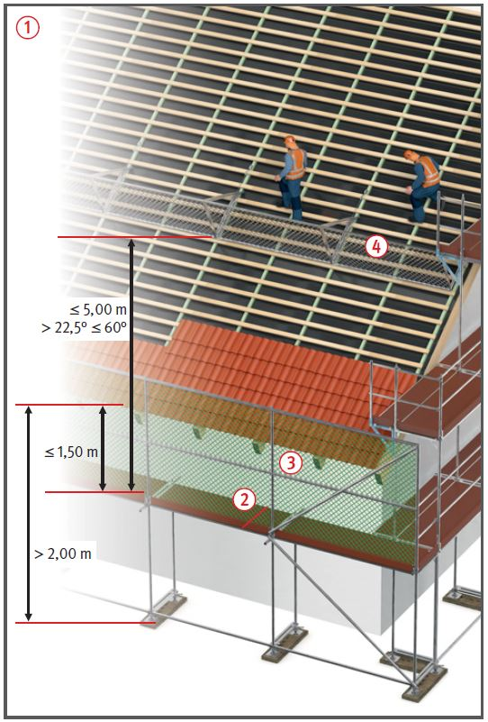
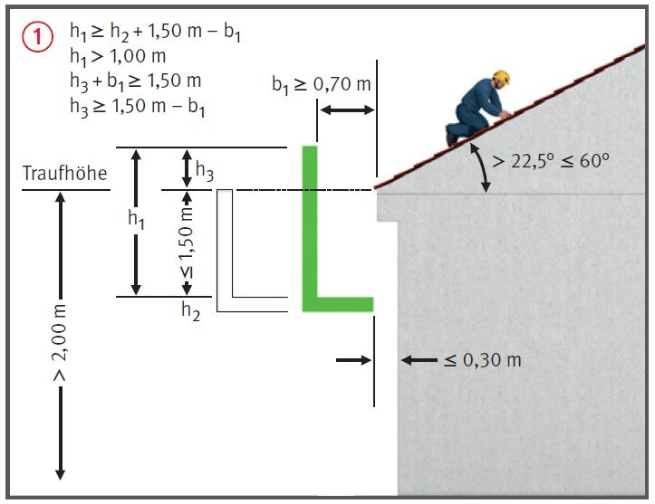
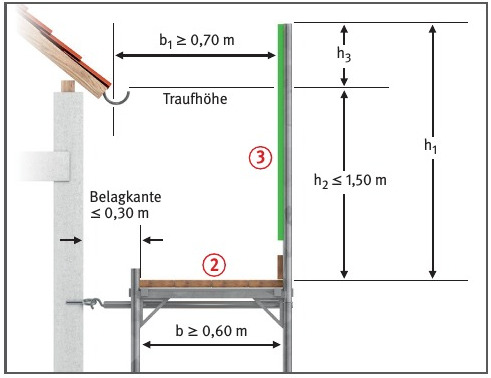
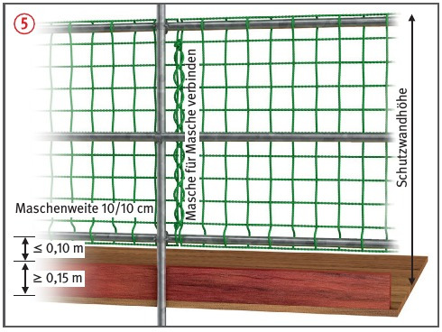

Gefährdungen
- Fehlende Sicherungsmaßnahmen
beim Auf- bzw. Abbau des
Dachfanggerüstes sowie falsch
dimensionierte, unvollständig
aufgebaute oder vorzeitig entfernte
Schutzwände bei der
Nutzung können Absturzunfälle
zur Folge haben.
Schutzmaßnahmen
- Wenn aus arbeitstechnischen
Gründen bei Dacharbeiten keine
Dachschutzwand an der Traufe
verwendet werden kann,
müssen stattdessen Dachfanggerüste
angebracht werden, die
ein Auffangen abstürzender
Personen gewährleisten. Dieses
gilt für Arbeitsplätze und
Verkehrswege auf Dächern mit
mehr als 22,5° bis 60° Neigung,
wenn die Absturzhöhe ab
Absturzkante (Traufe) mehr als
2,00 m beträgt
 .
.
- Der max. Höhenunterschied
zwischen Absturzkante (Traufe)
und Gerüstbelag darf 1,50 m
nicht überschreiten; Mindestbelagbreite 0,60 m
 .
.
- Schutzwände von Dachfanggerüsten aus tragfähigen Netzen
oder Geflechten mit einer
Maschenweite von max. 10 cm
herstellen
 .
.
- Bei hohen Dächern mit Höhenunterschieden
von mehr als
5,00 m müssen zusätzlich
Dachschutzwände auf der Dachfläche
angeordnet werden
 .
.

Dachneigungen zwischen 45° und 60°
- Für Arbeiten auf mehr als
45° geneigten Flächen sind
besondere Arbeitsplätze zu
schaffen, z. B. Dachdeckerstühle, Dachdecker-Auflegeleitern, Lattungen.
- Maßnahmen aus der Gefährdungsbeurteilung
beachten.



Schutzwand im Dachfanggerüst 
- Als Schutzwand im Dachfanggerüst
Schutzgitter oder Schutznetze mit Randseil entsprechend der Aufbau- und
Verwendungsanleitung des
Gerüstherstellers verwenden.
- Bei der allseitigen Befestigung von Schutznetzen oder Drahtgeflechten an systemunabhängigen Gerüstbauteilen sind Rohre mit 48,3 mm Außendurchmesser und einer Wanddicke von mind. 3,2 mm bei Stahlrohren nach DIN EN 39:2001-11 oder von mind. 4,0 mm bei Aluminiumrohren zu verwenden.
- Netze nicht mit Kabelbindern oder Bindedraht befestigen.
- Befestigung Masche für
Masche. Darauf kann verzichtet
werden, wenn das Netz mit Gurtschnellverschlüssen
höchstens
alle 75 cm am Rand befestigt ist
und der Hersteller die ausreichende
Tragfähigkeit durch
dynamische Versuche nachgewiesen
hat.
- Netzstöße Masche für Masche
mit einem Kopplungsseil verbinden oder mind. alle 75 cm
überlappen lassen.
- Schutznetze in ihren Abmessungen nicht verändern und
alle 12 Monate nach Angabe des
Herstellers prüfen.
- Beim Einsatz älterer Schutznetze
mittels des im Netz eingearbeiteten
Prüfgarnes die vom
Hersteller angegebene Mindestbruchkraft
prüfen lassen.
- Keine beschädigten und ungeprüften
Schutznetze verwenden.
- Bei Dachfanggerüsten müssen
alle Beläge gegen abheben
gesichert sein.
- Dachfanggerüste müssen in
der Regel verstärkt verankert
werden. Siehe Aufbau- und Verwendungsanleitung.
Prüfungen
- Gerüstersteller: Prüfung durch eine "zur Prüfung
befähigte Person" nach Fertigstellung und vor Übergabe an den
Nutzer, um den ordnungsgemäßen Zustand festzustellen (Nachweis-Prüfprotokoll).
- Gerüstnutzer: Inaugenscheinnahme durch eine
"qualifizierte Person" des jeweiligen Nutzers
vor der Verwendung, um die sichere Funktion und die Mängelfreiheit festzustellen
(Nachweis-Checkliste).
07/2021